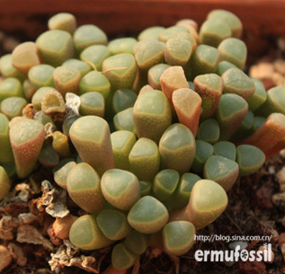

五十铃玉
拉丁名 Fenestraria rhopalophylla subsp
番杏科
窗玉属
分布于南非沿海地区及开普省、纳马夸兰和纳米比亚的吕德里茨，开普省较集中。世界多地有栽培。
简介
多年生肉质草本植物，植株密生成丛，株高5厘米，株幅30厘米。茎极短或无茎，根部与叶基部连接处木质化。
叶高度肉质，对生，长2-3厘米，棍棒状，顶端增粗呈浑圆状，淡绿色至灰绿色，基部稍呈红色，叶上半部分有极小的透明斑点，覆有蜡质保护层；叶顶端透明，微凸，称作“视窗”，用于接受阳光。
喜温暖干燥、阳光充足的环境。耐高温干旱或半阴，不耐寒。怕水湿、阴暗及强光暴晒。土壤宜为疏松、排水性良好、颗粒偏多的沙壤土。夏季或冬季温度过低时休眠。生长适温为18℃-24℃，冬季生长温度不低于12℃
图集
